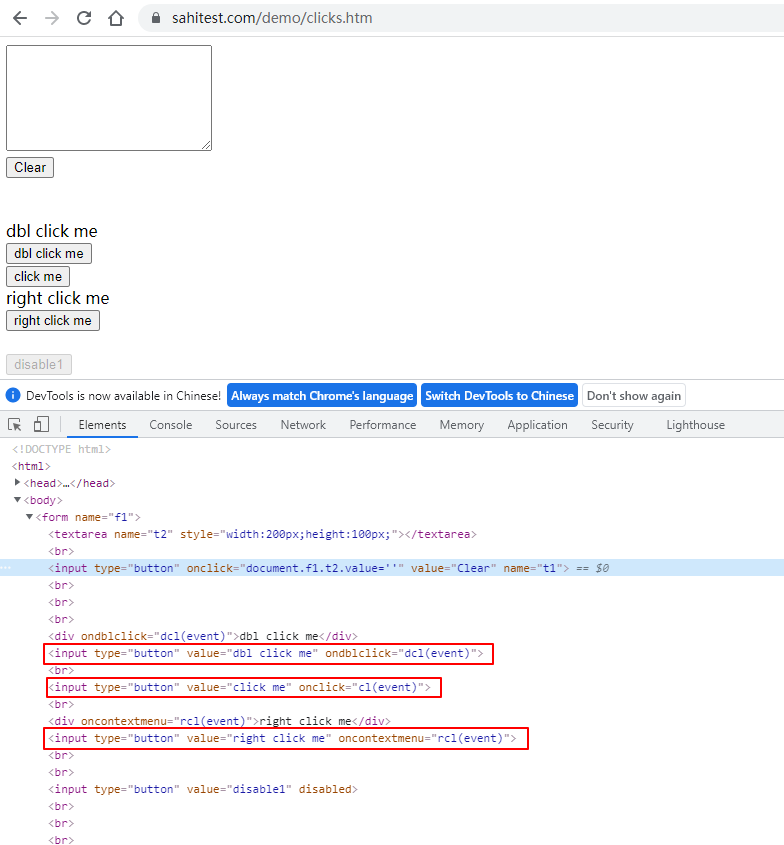
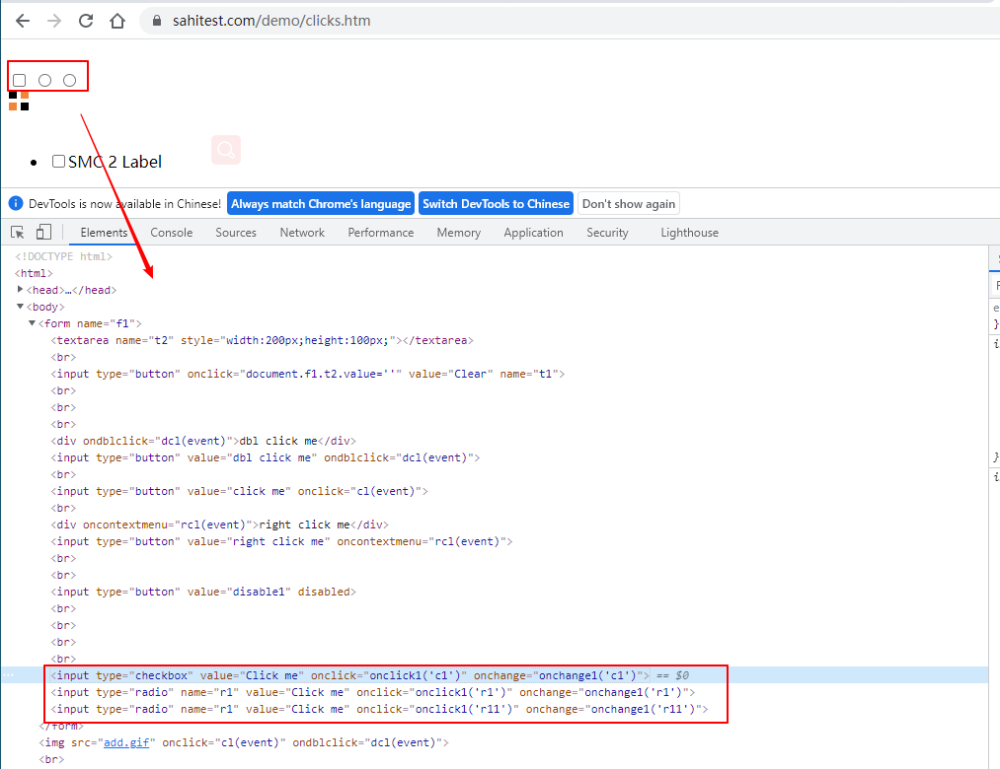
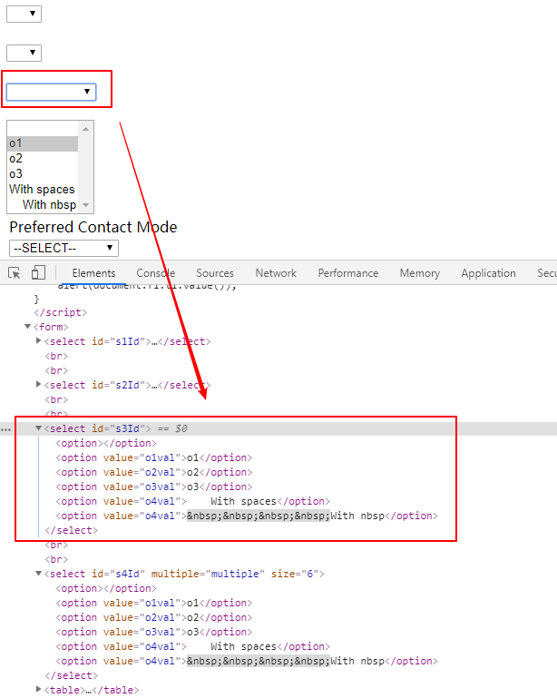
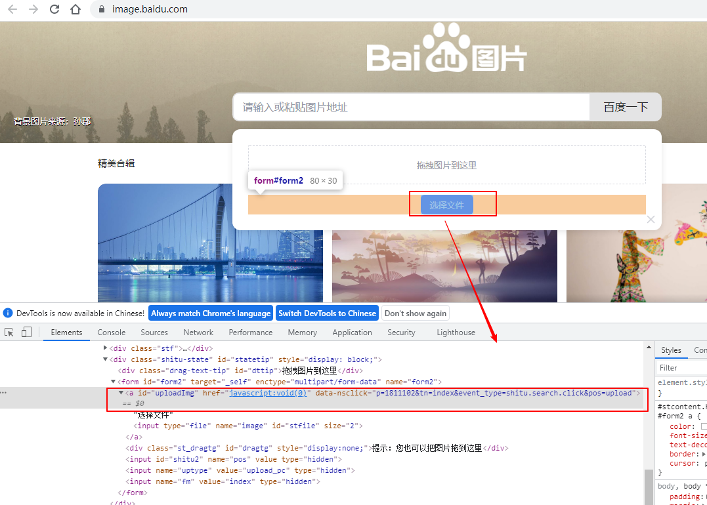

定位到元素后就可以对其进行某些操作，比如输入文本，点击，获取属性等，本文来介绍playwright提供的元素操作方法。
文本输入
文本输入使用 fill方法：
1 | page.fill("id=kw", "test") |
模拟键盘输入
1、一个字符一个字符的输入，模拟真实的键盘输入
page.type("id=kw", "playwright")page.type("id=kw", "playwright", delay=100): 每个字符延迟100ms输入
2、模拟按键
支持各种键盘事件，比如Tab、Delete、Enter、PageDown、PageUp、F1 - F12、0-9、A-Z等
page.press("id=kw", '@'): 模拟键盘输入@符号page.press("id=kw", 'Control+A')：Control+Apage.press('id=kw', 'Enter')：点击回车
测试百度搜索：1
2
3
4
5
6
7
8
9def test_press(self):
self.page.goto("https://www.baidu.com/")
self.page.type("id=kw", "playwright", delay=100)
self.page.press("id=kw", '@')
self.page.press("id=kw", 'Control+A')
self.page.press("id=kw", 'Delete')
self.page.press("id=kw", "Control+Z")
self.page.press('id=kw', 'Enter')
sleep(5)
点击
包括以下几种鼠标操作方法：
- 左键点击：
page.click("id=su") - 点击元素左上角：
page.click('id=su', position={'x': 0, 'y': 0}) - Shift + click：
page.click("id=su", modifiers=['Shift']) - 强制点击：
page.click("id=su", force=True) - 右键点击：
page.click("id=su", button='right') - 双击：
page.dblclick("id=su") - 悬停在元素上：
page.hover('id=su')
测试下面的页面，测试页面地址：https://sahitest.com/demo/clicks.htm

1 | from time import sleep |
Checkbox、Radio操作
使用 check 和 uncheck 来勾选或者取消勾选 Checkbox 和 Radio 。
- 勾选：
page.check('#agree') - 取消勾选：
page.uncheck('#agree') - 判断是否勾选：
page.is_checked('#agree')
测试页面地址：https://sahitest.com/demo/clicks.htm

1 | def test_checkbox_radio(self): |
select选项
使用 select_option() 方法对 <select> 元素进行操作：
page.select_option('select#colors', 'blue')：单选，通过 value 值进行选择page.select_option('select#colors', label='Blue')：单选，通过 label 值进行选择page.select_option('select#colors', vaule=['red', 'green', 'blue'])：多选，通过 value 值进行选择page.select_option('select#colors', label=['Red', 'Green', 'Blue'])：多选，通过 label 值进行选择
测试页面地址：http://sahitest.com/demo/selectTest.htm

1 | def test_select(self): |
上传文件
使用 set_input_files 方法来上传文件：
page.set_input_files('input#upload', 'myfile.pdf')：上传单个文件page.set_input_files('input#upload', ['file1.txt', 'file2.txt'])：上传多个文件page.set_input_files('input#upload', [])：移除选择的文件
上传图片：

1 | def test_upload_files(self): |
截图
1、截取当前页面
1 | page.goto("https://www.baidu.com/") |
2、截取指定元素
截取【百度一下】
1 | element_handle = self.page.query_selector("id=su") |
获取、判断元素属性及状态
1、读取属性：get_attribute(selector, attr_name)
断言【百度一下】的type属性：
1 | attr_value = self.page.get_attribute("id=su", "type") |
2、元素是否可见：is_visible(selector)
1 | visible = self.page.is_visible("id=su") |
3、元素是否可用：is_enabled(selector)
1 | enabled = self.page.is_enabled("id=su") |
4、是否勾选：page.is_checked(selector)
1 | assert page.is_checked(selector) is True |
5、inner text判断
百度一下首页【hao123】
1 | text = page.inner_text('#s-top-left:has(a) > a:nth-child(2)') |
6、文本内容判断
1 | content = page.text_content('#s-top-left:has(a) > a:nth-child(2)') |
参考：
本文标题:Web自动化测试之playwright：Web元素操作
文章作者:hiyo
文章链接:https://hiyongz.github.io/posts/web-testing-with-playwright-for-webelement-operate/
许可协议:本博客文章除特别声明外，均采用CC BY-NC-ND 4.0 许可协议。转载请保留原文链接及作者。